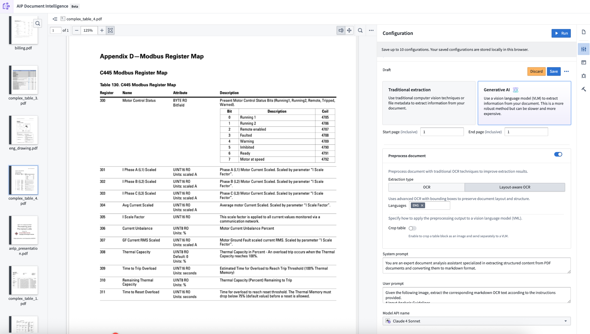
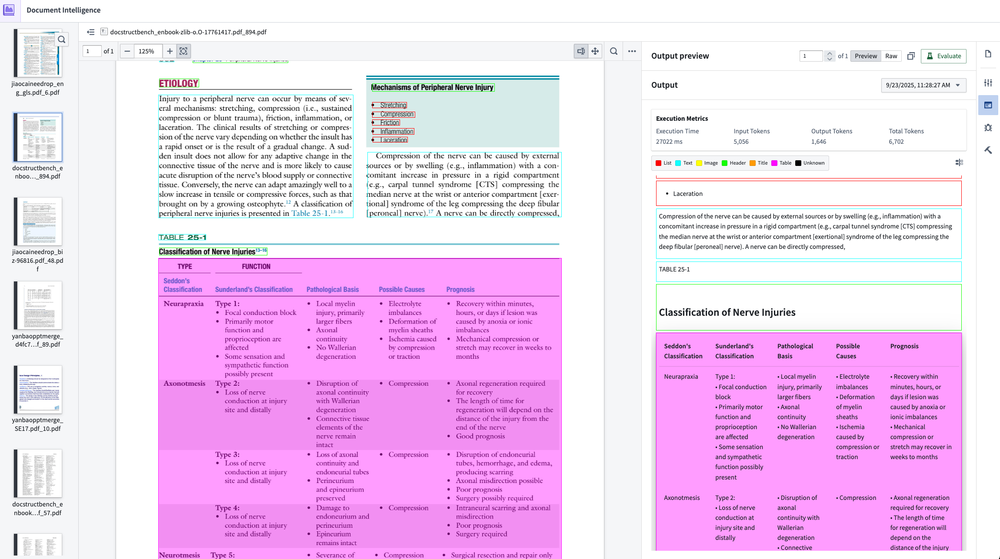
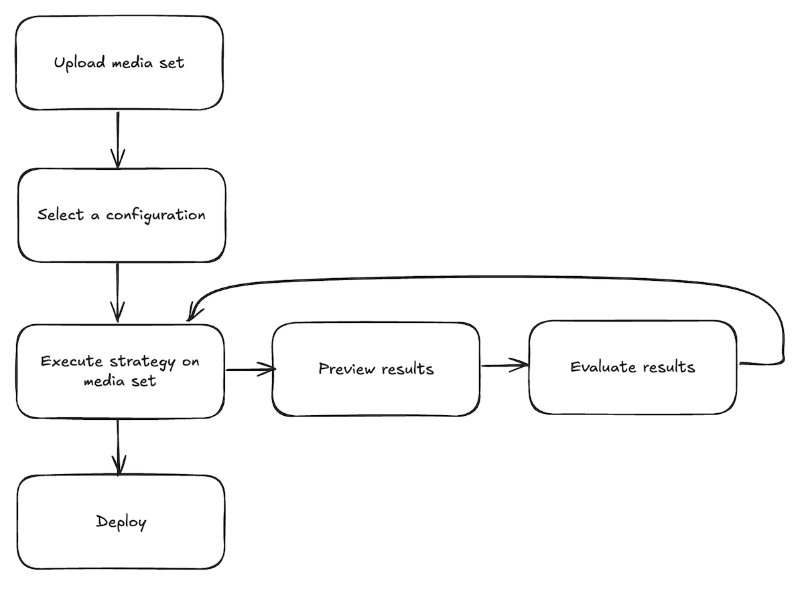
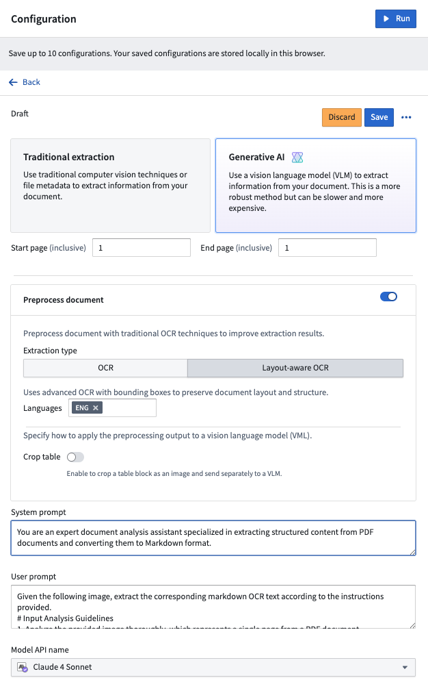
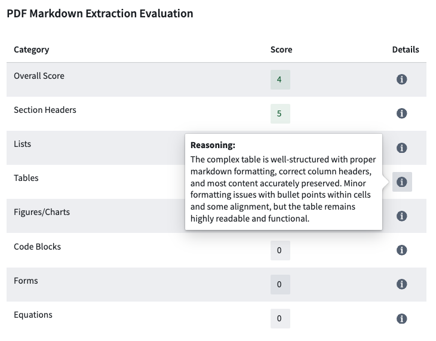
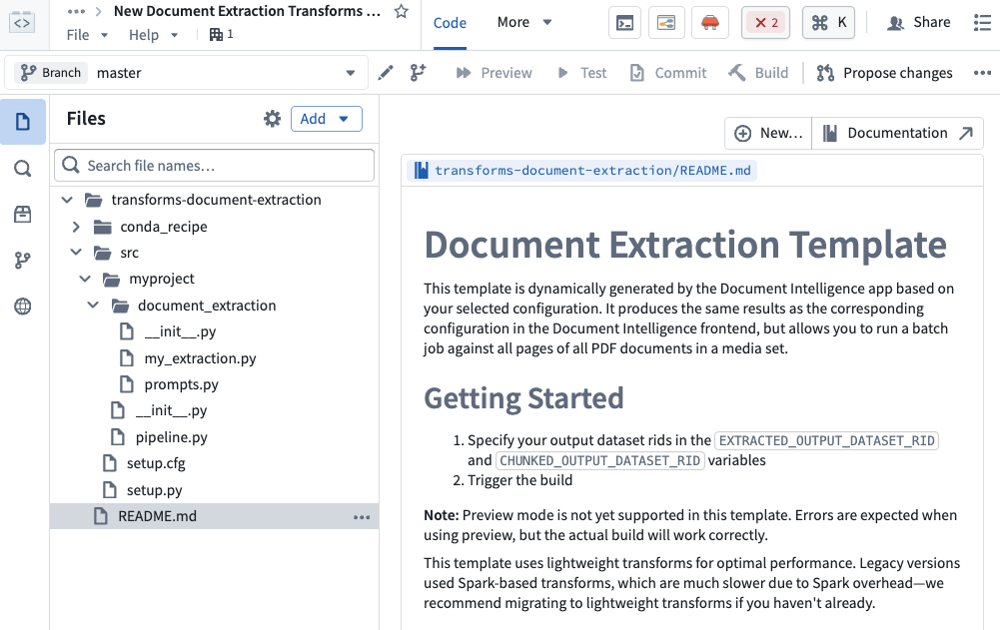

AIP Document Intelligence is Foundry's entry point for all document extraction workflows. You can use AIP Document Intelligence to open a media set of enterprise documents, quickly execute different state-of-the-art document extraction strategies, and retrieve evaluation results of the quality, speed, and token cost of such strategies. With a single click, you can then deploy the configured extraction strategy as a Python transform to a batch pipeline over a media set.

AIP Document Intelligence features several extraction capabilities alongside a simplified interface for efficient walk-up use:

AIP Document Intelligence follows a testing workflow where users import a media set, select a configuration, and iterate on their strategy by observing results and evaluations until satisfaction before deploying. Follow the steps below to get started:

Upload a media set: From the application landing page, choose to select a media set from your available files, or upload a new media set.
Select a configuration: Once the media set opens, open the Configuration tab to set up the extraction method you want to use. Choose between traditional or generative AI methods, enable preprocessing if desired, and customize prompts to use with a VLM. Select Save to remember your configuration choice in the future.

Execute strategy on a media set: After configuring the extraction method, select Run in the top right corner of the Configuration tab.
Preview extraction results: After running the extraction, navigate to the Extraction result tab to view the output based on the chosen strategy.
Evaluate extraction results (optional): From the results tab, select Evaluate results to use an LLM to evaluate the extraction results. Continue to test steps 3 through 5 until you are satisfied with the extraction results and evaluation.

Visualize chunking (optional): From the Extraction result tab, select the Chunk button next to an extraction result to preview how text will be split. You can adjust chunking parameters and see the results.
Deploy extraction strategy: Open the Deployment tab, select your saved configuration from the dropdown menu, and select Create transform repository. You will be prompted to choose a name and location for a new Python transforms repository. Optionally enable chunking and embedding. After the repository is created, specify the output dataset and start the build. See the repository's README.md for detailed instructions.
